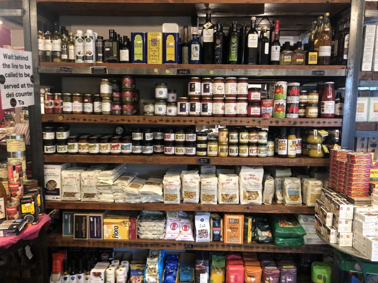

안녕하세요. 저희는 건강한 식품만을 다루는 온라인 쇼핑몰 healthy market 입니다.
어머니가 차려주시던 건강한 밥상, 안심하고 먹을 수 있는 한끼를 위해 healthy food를 구독하세요.
쇼핑몰 구독자들에게 무료배송과 신선한 먹거리를 보장합니다.
healthy market은 1934년 작은 식료품가게에서 시작하여 지금의 온라인 쇼핑몰이 되었습니다.
건강한 식사를 책임지겠다는 초창기의 마인드를 잃지 않고 경영하고 있습니다.
